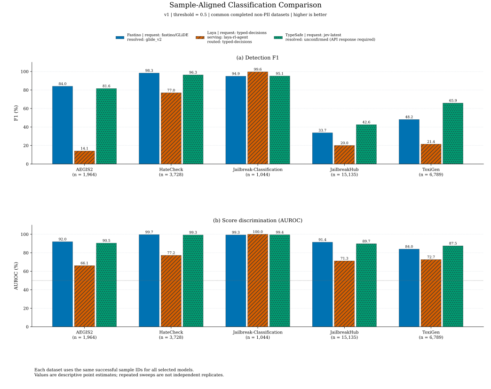
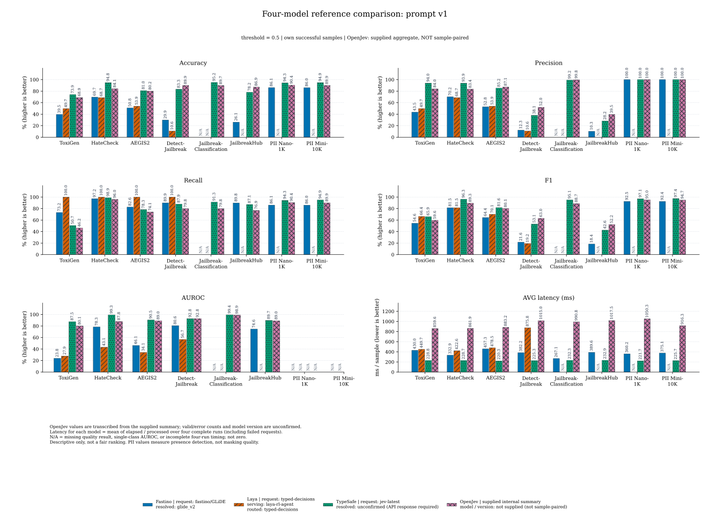
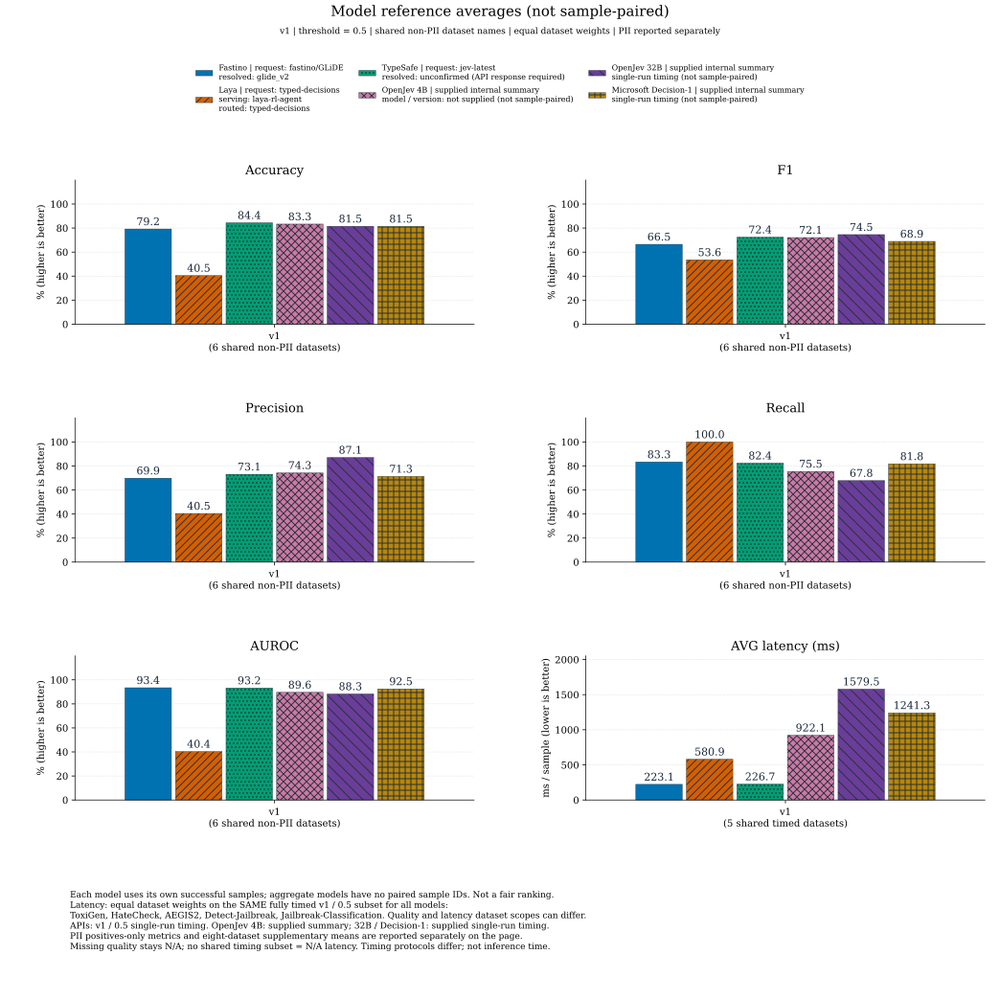

模型对比图
图内使用英文标签，图注使用中文。PDF / SVG 为矢量格式，PNG 默认为 300 DPI。
模型身份由用户补充；TypeSafe resolved model 需以接口返回为准。
下载全部图表 PDF |
下载 LaTeX 三线表 |
完整指标与结论报告（默认目录）
重复调用一致性数据：逐数据集 CSV | 共同样本 CSV | 模型均值 CSV
OpenJev 内部汇总（非共同样本基线）：汇总数据 CSV | 四模型参考明细 CSV | 参考均值 CSV
数据快照（UTC）：2026-10-23T04:34:55.578736+00:00
共同样本分类能力对比

固定 v1 / 0.5，按数据集展示 F1 与 AUROC。每个数据集内，所有模型使用完全相同的成功样本。AUROC 图中的 50% 虚线表示随机排序基线；没有伪造置信区间。
PNG | SVG | PDF
误报、漏报与耗时权衡

左图越靠左下越好，右图越靠左上越好。质量指标按共同数据集等权平均；耗时来自整轮日志，按全部处理样本加权，含网络和失败等待，不能解读为纯推理时延或 P95。
PNG | SVG | PDF
提示词与阈值敏感性

颜色区分模型，实线圆点表示 v1，虚线三角表示 v2。缺测留空，不补零。每个点只在其配置内使用共同成功样本，不同点的样本集合可能随请求错误变化；各阈值重新调用模型，曲线混有重复调用波动，不是固定 score 下的纯阈值效应；这是同测试集探索，不是独立验证后的性能提升。
PNG | SVG | PDF
测试覆盖率与请求失败

覆盖率为成功样本数 / 参考样本数。灰色为未获得预测文件，斜线为完整落盘但全部请求失败；PII 行仅展示覆盖率，不代表脱敏质量。Laya 缺测不记零分。
PNG | SVG | PDF
逐数据集六项指标

固定 v1 / 0.5，展示全部数据集的 Accuracy、Precision、Recall、F1、AUROC 和 AVG latency (ms)。质量指标使用各模型自身成功样本，不是共同样本公平排名；请求错误不计入质量分数。PII 仅衡量是否含 PII 的检出，不是脱敏质量，单类 AUROC 无定义。耗时为完整对齐日志的 elapsed / processed，包含失败等待及网络开销。缺测、无成功预测、无定义指标或无完整计时均标 N/A，不补零；请求全失败仍可有日志耗时。
PNG | SVG | PDF
模型平均指标

固定 v1 / 0.5，在共同完成且有共同成功样本的非 PII 数据集上，展示 Average Accuracy、Avg Precision、Avg Recall、Avg AUROC 和 Avg latency (ms)。分类指标先按共同成功样本计算，再对数据集等权平均；耗时也对各数据集的整轮平均耗时等权平均，与图 2 按样本数加权的耗时口径不同。缺少任一共同数据集完整计时，平均耗时即标 N/A。
PNG | SVG | PDF
含 OpenJev 的四模型参考对比：v1

固定阈值 0.5。OpenJev 为用户提供的内部汇总结果，其他模型使用各自成功样本；无法按 OpenJev 的共同成功样本对齐，不作为公平排名。Rows 是总行数，不将其当作有效样本数。PII 仅为是否含 PII 的检出，单类 AUROC 标 N/A。四模型耗时统一取每个数据集/提示词四轮完整日志的 elapsed/processed 等权均值，包含失败等待、客户端及网络开销；缺少完整四轮计时标 N/A。原有共同样本基线与稳定性分析保持不变，不加入仅有汇总数据的 OpenJev。
PNG | SVG | PDF
含 OpenJev 的四模型参考对比：v2

口径与 v1 参考图相同，v2 独立统计。分类指标对应阈值 0.5，不对四个阈值的质量分数取平均。耗时则对同数据集/提示词四轮完整运行的 elapsed/processed 取均值。OpenJev 有效样本数及错误数未从有 OCR 错字的文本推断；原始数值采用最初清晰表格，不擅自修正。
PNG | SVG | PDF
含 OpenJev 的四模型参考均值

仅对所有模型均有可用质量结果的非 PII 数据集等权平均，v1/v2 分开。展示 Average Accuracy、Avg Precision、Avg Recall、Avg F1、Avg AUROC、Avg latency。这里仅共同数据集名称相同，各模型成功样本未对齐，不能与原有共同样本模型均值混排。计时先对各数据集完整四轮取均值，再对数据集等权平均；任一计时缺失则平均耗时为 N/A。
PNG | SVG | PDF